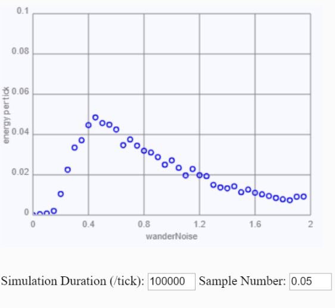

When the bot moves in a straght line it sweeps out a rectangular path with a width equal
to the bot diameter and a length equal to the distance traveled (velocity times time). Using the
density of pellets in the arena, calculate the average energy collected per unit time for such a
path, ignoring the effects of boundaries (this is a calculation, not a simulation).
At the speed of 3 pixel/tick, the area covered in unit time (1 tick) is a ractangle of length 3 and height 3. The total area of the sweep is . Knowing the density of the pellets, the average number of "food" collected in unit time is energy.
Based on the graph that you created, approximately what value of wanderNoise appears to be optimal?
Base on simulation of 5000 update, the optimal range appeared to be at 0.4 - 0.6.
At the optimal noise level, what is the numerical value of foraging efficiency, as determined from your graph?
How does this compare to the theoretical
value calculated in question 1? Why are these values different?
From the graph, the foraging efficiency is ~0.05. It is twice as large as the value in Q1 (0.0233). The difference is caused by the redistrubution of the food pellets after comsumed. It is less likely of the food pellets to appear on the same path. Adding randomness increased the chance for making contact with another food pellets.
Why does foraging efficiency decrease at lower values of wanderNoise relative to the optimum?
There is not enough randomness to drive the change in direction. The bot is still moving on the same path.
Why does foraging efficiency decrease at higher values of wanderNoise relative to the optimum?
With too high of a randomness, the bot is essentially changing direction constantly. Because the range of the random() function, it ultimately makes the bot wander at the same place.
Attachement
If we ran each bot for 100,000 ticks, we get the following plot.
